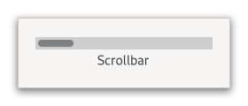

Gtk.Scrollbar¶
Example¶
- Subclasses:
None
Methods¶
- Inherited:
Gtk.Widget (181), GObject.Object (37), Gtk.Accessible (16), Gtk.Buildable (1), Gtk.Orientable (2)
- Structs:
class |
|
|
Virtual Methods¶
Properties¶
- Inherited:
Name |
Type |
Flags |
Short Description |
|---|---|---|---|
r/w/c/en |
Signals¶
- Inherited:
Fields¶
- Inherited:
Class Details¶
- class Gtk.Scrollbar(**kwargs)¶
- Bases:
- Abstract:
No
The
GtkScrollbarwidget is a horizontal or vertical scrollbar.An example
Gtk.ScrollbarIts position and movement are controlled by the adjustment that is passed to or created by [ctor`Gtk`.Scrollbar.new]. See [class`Gtk`.Adjustment] for more details. The [property`Gtk`.Adjustment:value] field sets the position of the thumb and must be between [property`Gtk`.Adjustment:lower] and [property`Gtk`.Adjustment:upper] - [property`Gtk`.Adjustment:page-size]. The [property`Gtk`.Adjustment:page-size] represents the size of the visible scrollable area.
The fields [property`Gtk`.Adjustment:step-increment] and [property`Gtk`.Adjustment:page-increment] fields are added to or subtracted from the [property`Gtk`.Adjustment:value] when the user asks to move by a step (using e.g. the cursor arrow keys) or by a page (using e.g. the Page Down/Up keys).
- CSS nodes
`` scrollbar ╰── range[.fine-tune]
- ╰── trough
╰── slider
GtkScrollbarhas a main CSS node with name scrollbar and a subnode for its contents. The main node gets the .horizontal or .vertical style classes applied, depending on the scrollbar’s orientation.The range node gets the style class .fine-tune added when the scrollbar is in ‘fine-tuning’ mode.
Other style classes that may be added to scrollbars inside [class`Gtk`.ScrolledWindow] include the positional classes (.left, .right, .top, .bottom) and style classes related to overlay scrolling (.overlay-indicator, .dragging, .hovering).
- Accessibility
GtkScrollbaruses theGtk.AccessibleRole.SCROLLBARrole.- classmethod new(orientation, adjustment)[source]¶
- Parameters:
orientation (
Gtk.Orientation) – the scrollbar’s orientation.adjustment (
Gtk.AdjustmentorNone) – the [class`Gtk`.Adjustment] to use, orNoneto create a new adjustment.
- Returns:
the new
GtkScrollbar.- Return type:
Creates a new scrollbar with the given orientation.
- get_adjustment()[source]¶
- Returns:
the scrollbar’s adjustment
- Return type:
Returns the scrollbar’s adjustment.
- set_adjustment(adjustment)[source]¶
- Parameters:
adjustment (
Gtk.AdjustmentorNone) – the adjustment to set
Makes the scrollbar use the given adjustment.
Property Details¶
- Gtk.Scrollbar.props.adjustment¶
- Name:
adjustment- Type:
- Default Value:
- Flags:
The
GtkAdjustmentcontrolled by this scrollbar.